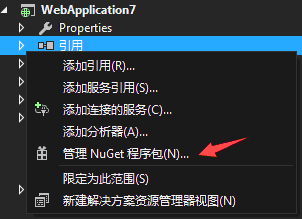
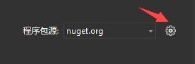
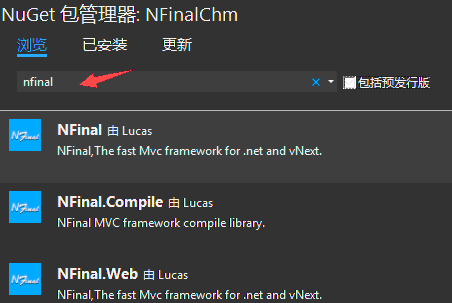

NFinal框架不仅仅是一些引入，还包含了生成器部分。
1.在Web应用程序的引用上点右键，选择管理Nuget程序包。
（应用程序必须为.net framework 4.0及以上版本）

(可选)当微软官方的nuget服务器被墙时，可通过以下方式进行安装
(可选)a.找到Nuget管理按钮

(可选)b.添加NFinal Nuget服务器,名称:NFinal,源:http://api.nfinal.com/nuget

(可选)c.选择添加的Nuget服务器

2.搜索NFinal.Web安装包

3.安装NFinal.Web

4.先保存整个项目，接着运行NFinal文件夹下的AutoConfig.exe.
5.输入想要增加的功能模块的名字(比如App,Admin,Shop,Forum等【名称必须全为字母】),回车.
6.VS会自动检测项目文件被修改,我们选择放弃即可,如果没有放弃选择重新加载.
7.浏览新添加文件夹下的Web.Compiler.aspx
8.这时安装已经完成,找到【模块】/Web/IndexController/Index.html文件,右键选择在浏览器中查看.